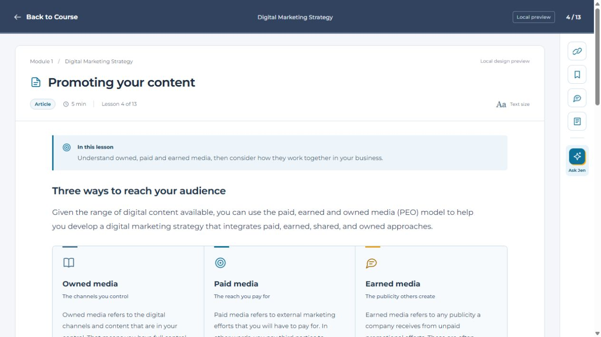
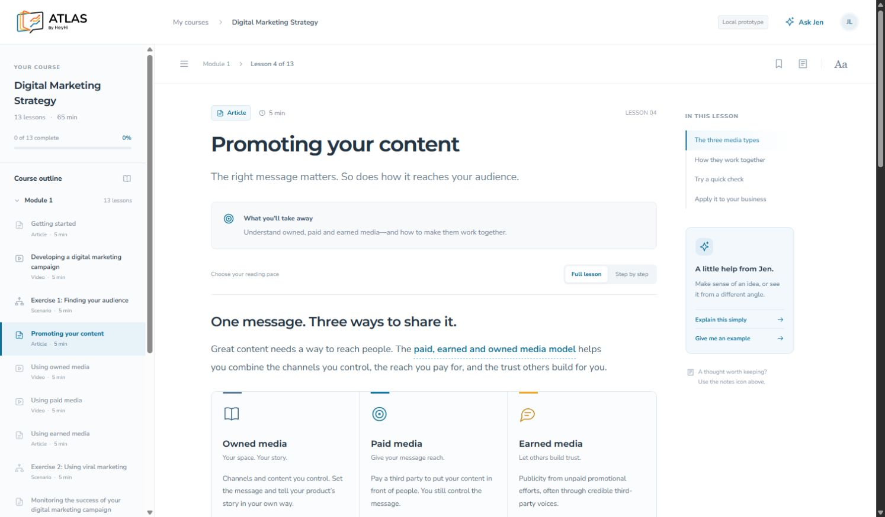
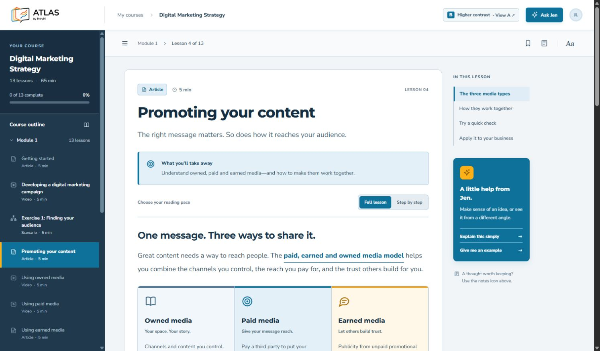
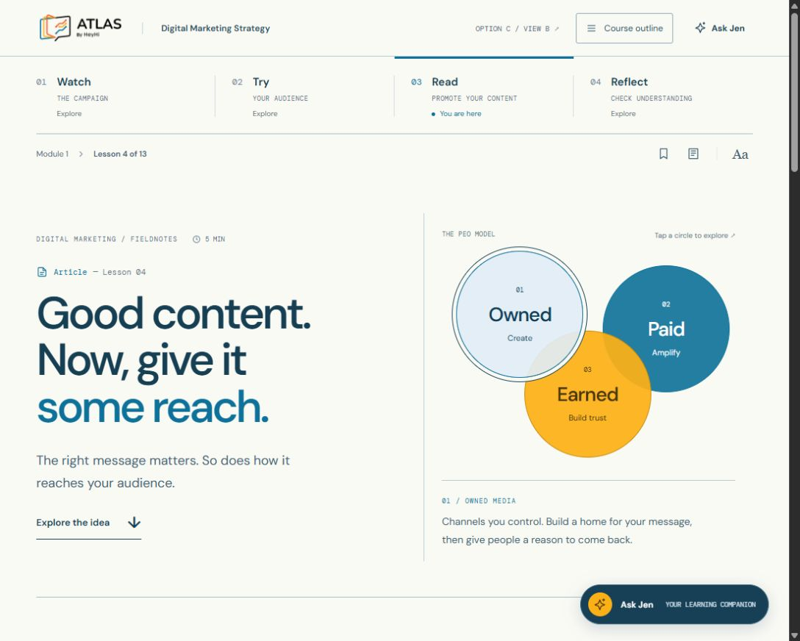
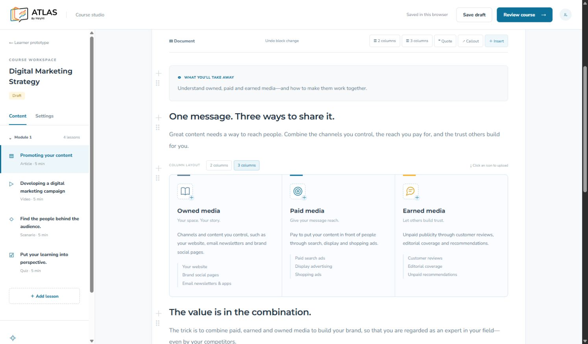
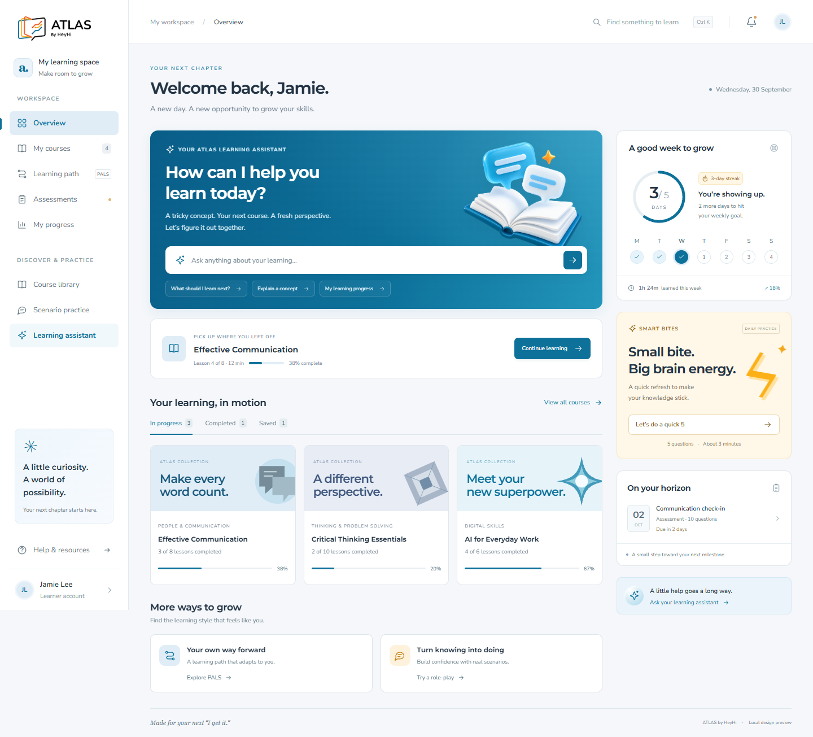

Six local prototypes covering the learner dashboard, course experience, and course creation. Open each option to explore its interactions.
Extract the ZIP before opening this page. These are design previews with sample data, not live ATLAS. Internet is needed for external fonts and video. Preview images show saved design states.

Latest direction. Preserves the existing ATLAS layout with clearer typography and content structure.

First course concept with varied article blocks and four sample lesson formats.

Higher contrast design with a navy course outline.

Editorial exploration with a horizontal lesson path and interactive concepts.

Notion-style content authoring, columns, icons, callouts, and learner preview.

Dashboard concept with learning assistant and sample learner interactions.